9. Initial and Boundary Data¶
9.1. Initial Data¶
In this section, we describe how the time integration is started from data consistent with the spectral truncation. The land surface model requires its own initial data, as described by [Bon96]. The basic initial data for the model consist of values of
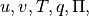
and on the Gaussian grid at time
on the Gaussian grid at time 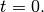
From these, , and
, and  are computed on the grid using
(?) , and (?) . The Fourier coefficients of these variables
are computed on the grid using
(?) , and (?) . The Fourier coefficients of these variables
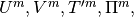
and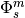
are determined via an FFT subroutine (?) , and the spherical harmonic coefficients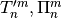
, and are
determined by Gaussian quadrature (?) . The relative vorticity
are
determined by Gaussian quadrature (?) . The relative vorticity
 and divergence
and divergence  spherical harmonic
coefficients are determined directly from the Fourier coefficients
spherical harmonic
coefficients are determined directly from the Fourier coefficients
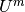
and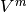
using the relations,(1)
The relative vorticity and divergence coefficients are obtained by
Gaussian quadrature directly, using (?) for the
 –derivative terms and (?) for the
–derivative terms and (?) for the  –derivatives.
–derivatives.
Once the spectral coefficients of the prognostic variables are
available, the grid–point values of  and
may be calculated from (?) , the gradient
and
may be calculated from (?) , the gradient
 from (?) and (?) , and
from (?) and (?) , and  and
and
 from (?) and (?) . The absolute vorticity
from (?) and (?) . The absolute vorticity
 is determined from the relative vorticity by
adding the appropriate associated Legendre function for
is determined from the relative vorticity by
adding the appropriate associated Legendre function for  (?) . This process gives grid–point fields for all variables,
including the surface geopotential, that are consistent with the
spectral truncation even if the original grid–point data were not. These
grid–point values are then convectively adjusted (including the mass and
negative moisture corrections).
(?) . This process gives grid–point fields for all variables,
including the surface geopotential, that are consistent with the
spectral truncation even if the original grid–point data were not. These
grid–point values are then convectively adjusted (including the mass and
negative moisture corrections).
The first time step of the model is forward semi–implicit rather than centered semi–implicit, so only variables at
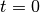
are needed. The model performs this forward step by setting the variables at time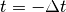
equal to those at and by temporarily dividing
and by temporarily dividing
 by 2 for this time step only. This is done so that formally
the code and the centered prognostic equations of chapter [chap3] also
describe this first forward step and no additional code is needed for
this special step. The model loops through as indicated sequentially in
chapter [chap3]. The time step is set to its original
value before beginning the second time step.
by 2 for this time step only. This is done so that formally
the code and the centered prognostic equations of chapter [chap3] also
describe this first forward step and no additional code is needed for
this special step. The model loops through as indicated sequentially in
chapter [chap3]. The time step is set to its original
value before beginning the second time step.
9.2. Boundary Data¶
In addition to the initial grid–point values described in the previous
section, the model also requires lower boundary conditions. The required
data are surface temperature ( at each ocean point, the
surface geopotential at each point, and a flag at each point to indicate
whether the point is land, ocean, or sea ice. The land surface model
requires its own boundary data, as described by [Bon96]. A surface
temperature and three subsurface temperatures must also be provided at
non-ocean points.
at each ocean point, the
surface geopotential at each point, and a flag at each point to indicate
whether the point is land, ocean, or sea ice. The land surface model
requires its own boundary data, as described by [Bon96]. A surface
temperature and three subsurface temperatures must also be provided at
non-ocean points.
For the uncoupled configuration of the model, a seasonally varying sea–surface temperature, and sea–ice concentration dataset is used to prescribe the time evolution of these surface quantities. This dataset prescribes analyzed monthly mid-point mean values of SST and ice concentration for the period 1950 through 2001. The dataset is a blended product, using the global HadISST OI dataset prior to 1981 and the Smith/Reynolds EOF dataset post-1981 (see Hurrell, 2002). In addition to the analyzed time series, a composite of the annual cycle for the period 1981-2001 is also available in the form of a mean “climatological” dataset. The sea–surface temperature and sea ice concentrations are updated every time step by the model at each grid point using linear interpolation in time. The mid-month values have been evaluated in such a way that this linear time interpolation reproduces the mid-month values.
Earlier versions of the global atmospheric model (the CCM series) included a simple land-ocean-sea ice mask to define the underlying surface of the model. It is well known that fluxes of fresh water, heat, and momentum between the atmosphere and underlying surface are strongly affected by surface type. The CAM6.0 provides a much more accurate representation of flux exchanges from coastal boundaries, island regions, and ice edges by including a fractional specification for land, ice, and ocean. That is, the area occupied by these surface types is described as a fractional portion of the atmospheric grid box. This fractional specification provides a mechanism to account for flux differences due to sub-grid inhomogeneity of surface types.
In CAM6.0 each atmospheric grid box is partitioned into three surface types: land, sea ice, and ocean. Land fraction is assigned at model initialization and is considered fixed throughout the model run. Ice concentration data is provided by the external time varying dataset described above, with new values determined by linear interpolation at the beginning of every time-step. Any remaining fraction of a grid box not already partitioned into land or ice is regarded as ocean.
Surface fluxes are then calculated separately for each surface type, weighted by the appropriate fractional area, and then summed to provide a mean value for a grid box:
(2)
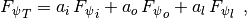
where  denotes the surface flux of the arbitrary scalar
quantity
denotes the surface flux of the arbitrary scalar
quantity  ,
,  denotes fractional area, and the
subscripts
denotes fractional area, and the
subscripts
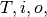
and respectively denote the total,
ice, ocean, and land components of the fluxes. For each time-step the
aggregated grid box fluxes are passed to the atmosphere and all flux
arrays which have been used for the accumulations are reset to zero in
preparation for the next time-step. The fractional land values for CAM6.0 were
calculated from Navy 10-Min Global Elevation Data. An area preserving
binning algorithm was used to interpolate from the high-resolution Navy
dataset to standard model resolutions.
respectively denote the total,
ice, ocean, and land components of the fluxes. For each time-step the
aggregated grid box fluxes are passed to the atmosphere and all flux
arrays which have been used for the accumulations are reset to zero in
preparation for the next time-step. The fractional land values for CAM6.0 were
calculated from Navy 10-Min Global Elevation Data. An area preserving
binning algorithm was used to interpolate from the high-resolution Navy
dataset to standard model resolutions.
The radiation parameterization requires monthly mean ozone volume mixing
ratios to be specified as a function of the latitude grid, 23 vertical
pressure levels, and time. The ozone path lengths are evaluated from the
mixing–ratio data. The path lengths are interpolated to the model
–layer interfaces for use in the radiation calculation. As
with the sea–surface temperatures, the seasonal version assigns the
monthly averages to the mid–month date and updates them every 12 hours
via linear interpolation. The actual mixing ratios used in the standard
version were derived by [Che86] from analysis of [Dutsch86].
The sub-grid scale standard deviation of surface orography is specified
in the following manner. The variance is first evaluated from the global
Navy 10 topographic height data over an intermediate
grid (
topographic height data over an intermediate
grid (
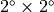
grid for T42 and lower resolutions,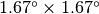
for T63, and for T106 resolution) and is assumed to be isotropic. Once computed on the appropriate grid, the standard deviations are binned to the CAM6.0 grid (i.e., all values whose latitude and longitude centers fall within each grid box are averaged together). Finally, the standard deviation is smoothed twice with a 1–2–1 spatial filter. Values over ocean are set to zero.